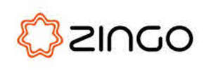

Trade Mark Journal No.2025/050 12 December 2025
UK00004300731 25 November 2025 (9,10,35,42,44)

- Class 9
- Wearable electronic devices for wellness and medical purposes; electronic earpieces incorporating microcurrent stimulation technology for personal wellbeing and therapeutic use; handheld electronic controllers for operating wearable stimulation devices; electronic apparatus for biofeedback and relaxation support; downloadable software for configuring, monitoring, and controlling wearable neurostimulation devices; downloadable mobile applications for personal wellbeing tracking, medical monitoring, and device management; electronic sensors for detecting user input related to wellbeing and physiological data; battery-powered wearable consumer electronic devices for generating microcurrent signals; software for the treatment and monitoring of depression, neurological, and psychological conditions.
- Class 10
- Medical nerve-stimulation apparatus; medical neurostimulation devices for therapeutic use; medical apparatus for delivering controlled electrical stimulation to nerves; medical devices incorporating electrodes for therapeutic nerve modulation; transcutaneous electrical nerve stimulation apparatus; medical devices for the treatment of depression, anxiety, and neurological disorders.
- Class 35
- Retail services connected with the sale of wearable wellbeing devices and medical apparatus; online retail store services featuring consumer electronic wellness products and medical devices; business intermediary services for the sale of wearable neurostimulation apparatus; promotional and marketing services for consumer wellbeing electronics and medical technologies; provision of online marketplace services for wearable wellness devices, medical devices, and related accessories.
- Class 42
- Software as a service (SaaS) featuring software for monitoring and controlling wearable neurostimulation devices; providing temporary use of online non-downloadable software for tracking personal wellbeing metrics and medical data; hosting of platforms for managing user settings and session data for wearable wellness and medical devices; design and development of software for consumer wellbeing electronics and medical applications; cloud-based data processing services for user wellbeing and health information.
- Class 44
- Medical and healthcare services; psychological assessment, counselling and consultation services; providing information and guidance in the field of personal wellbeing, relaxation, and medical health; wellness consultancy relating to stress-reduction and lifestyle improvement; provision of wellbeing coaching services; advisory services relating to personal relaxation techniques; telemedicine services; medical advisory services relating to the use of neurostimulation; diagnosis and treatment of depression, anxiety, and neurological conditions.
Zing Elate Limited
Representative: Briffa